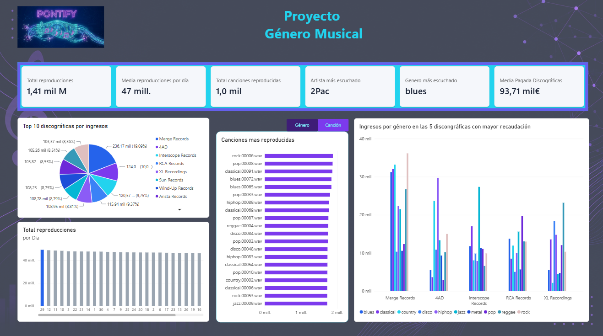
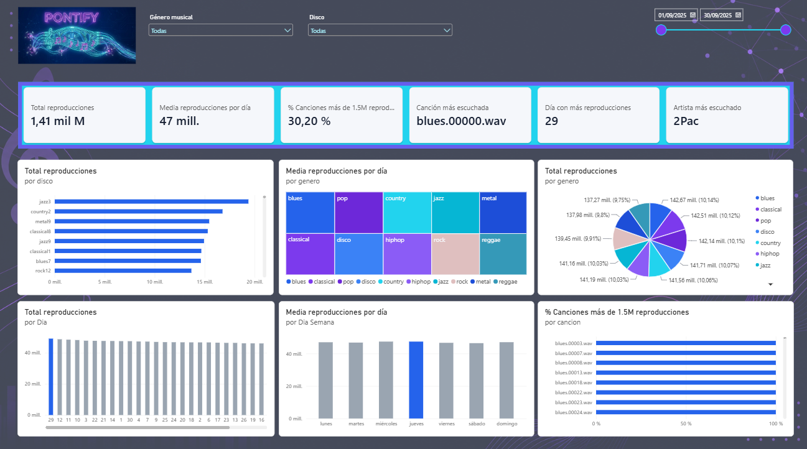
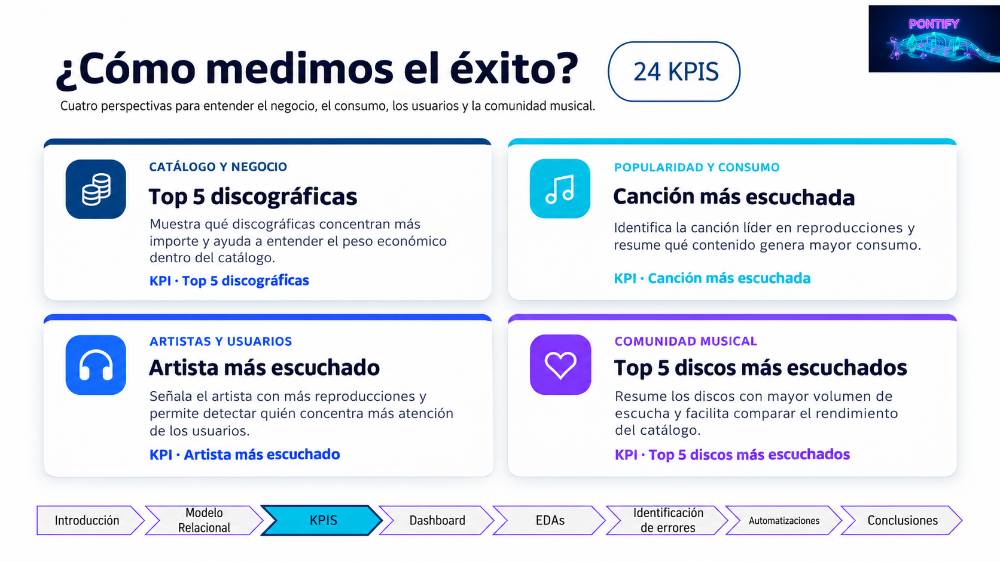
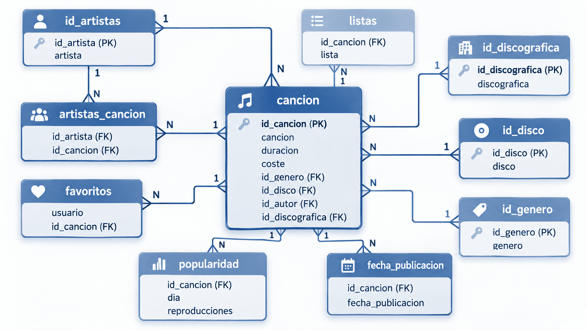

EDA
Análisis exploratorio de los datos.
BUSINESS INTELLIGENCE · DATA ANALYTICS · MACHINE LEARNING
Transformando datos musicales en información útil.
Júpiter es un proyecto académico colaborativo desarrollado durante el Máster en Data Analytics & Data Science de PontIA. El equipo trabajó en la organización, análisis y visualización de datos de una plataforma musical, así como en la evaluación de modelos para clasificar géneros musicales.

Ampliar imagenCONTEXTO
El escenario planteaba una plataforma musical con información que debía estructurarse y analizarse para mejorar su explotación. Se requerían indicadores de negocio, controles de calidad del dato y una aproximación a la clasificación automática de géneros.
OBJETIVOS
MI CONTRIBUCIÓN
Trabajo realizado por Alejandro dentro del proyecto colaborativo.
Análisis exploratorio de los datos.
Elaboración de KPIs sobre reproducciones, discográficas, discos y patrones de consumo. Realización de medidas DAX y creación de indicadores para el dashboard en Power BI.
Código para trabajar con datos de entrenamiento/prueba y análisis previo. Entrenamiento de algoritmos de ML y DL.
Colaboración en escritura y redacción de la memoria.
PROCESO
Proceso de trabajo del equipo.
EVIDENCIAS VISUALES
Material original extraído de la presentación del proyecto colaborativo. Pulsa una imagen para verla ampliada.

Ampliar imagenCONSUMO MUSICAL
El dashboard permite analizar las reproducciones por disco y género, explorar su evolución diaria y comparar los días de la semana. Incluye filtros de género musical, disco y fechas, además de indicadores sobre las canciones más escuchadas.
Captura actualizada del proyecto colaborativo · Escenario académico.

Ampliar imagenINDICADORES DE NEGOCIO
La presentación recoge un conjunto de 24 KPIs. Esta selección muestra cómo analizar discográficas, artistas, canciones y discos según su consumo.
Lámina del equipo · Diapositiva 12.

Ampliar imagenESTRUCTURA DE LOS DATOS
El esquema relaciona diez tablas, incluyendo canciones, artistas, discos, géneros, listas, favoritos y popularidad. Proporciona la estructura para consultar y cruzar la información.
Esquema del equipo · Diapositivas 8 y 10.
APRENDIZAJES
Mi participación en Júpiter reforzó la importancia de explorar y preparar los datos antes de analizarlos, definir indicadores útiles y comunicar resultados de forma comprensible. También afianzó mi interés profesional por Business Intelligence y el análisis de datos.